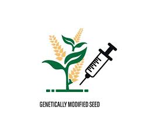

The female wheat plants in a field are pollinated by male plants of a different line, with the goal of producing seeds that carry stronger yield potential and adaptability to adverse environments than either parent.
The fertilized female plant produces new, unique offspring called a hybrid
Hybrid rice is produced when the egg is fertilized by pollen from anthers of a rice plant from a different variety or line.
In order to produce great quantities of hybrid seeds, two kinds of parental lines are needed, a seed parent which is usually male sterile and a pollen parent.
There are many different hybrid varities of Cauliflower
Orange cauliflower : It is a hybridized variety that was first discovered in Canada in 1970. It contains a genetic mutation that allows the plant to store more beta carotene, giving it an orange color and making it a good source of vitamin A.
Ns 60N : It is a fast-maturing variety that produces high-yield crops of creamy white florets. They are ideal for short-season, cool climates due to their 90-day maturity rate. The extended leaf cover also helps to protect against extreme temperatures.
Dhaval 043 F1 : It is an early maturing hybrid variety interesting for the semi tropical segment. It has a large and strong plant type with half self covering ability. Heads are white in color with good firmness and uniformity . It is also a high disease tolerant vegetable.
There are many different hybrid varities of Mustard
DMH-11: A genetically modified hybrid mustard developed from a cross between the Indian mustard variety "Varuna" and the East European "Early Heera-2" mustard. It is a Herbicide Tolerant (HT) mustard.
PBT 37: An early maturity variety of toria that matures in 91 days. It is suitable for toria-wheat.